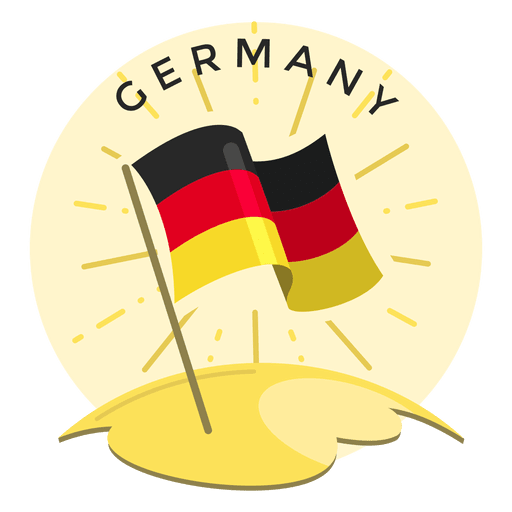

Faça seu comentário:
origem
As terras da Alemanha são habitadas há muitos milhares de anos. Na Idade do Bronze, essas terras eram ocupadas por povos indo-europeus. Alguns séculos antes da Era Cristã, povos germânicos habitavam o norte e centro da atual Alemanha. Celtas povoaram o sul e o oeste.
Antes de 50 aC, durante a conquista da Gália, o general romano Júlio Cesar cruzou o Rio Reno e invadiu a Germânia, como os romanos chamavam essa parte da Europa, que incluía a maior parte da atual Alemanha. A Gália romana foi limitada pelo Reno. Envolvia a atual França, Bélgica e uma parte do oeste da Alemanha. Nos séculos seguintes, os romanos continuaram os embates com tribos germânicas, conquistando mais algumas terras da Germânia, mas não a maior parte. Por volta do século 3, existia alguma estabilidade nas relações entre os romanos e as tribos germânicas, que aprenderam a cultura romana e suas técnicas de guerra. No século 5, tribos germânicas invadiram o Império Romano e dominaram parte de seu território, incluindo a Península Ibérica.
Chamamos de Alemanha, e não Germânia, por causa dos alamanos (Alamanni, em latim), um grupo de tribos germânicas que habitavam o sul e o oeste da Alemanha.
No final do século 5, a Germânia começou a ser conquistada pelos francos, com a consequente introdução do Cristianismo. Essa foi uma época de grandes ondas migratórias na Europa. No final do século 8, a maior parte da Germânia fazia parte do Império de Carlos Magno. A residência principal de Carlos Magno ficava em Aachen, atualmente uma cidade alemã, perto da fronteira com a Bélgica. Em 800, em sua coroação pelo Papa Leão III, Carlos Magno adotou o título "Carlos, muito sereno Augusto, coroado por Deus, grande e pacífico imperador, governando o Império Romano". Seu Império era aproximadamente a Europa Central, até Roma. Em 888, após a morte de Carlos, o Gordo, os reinos que integravam o Império Romano de Carlos Magno passaram a contestar a legitimidade de seus sucessores, especialmente os reinos da Itália. O Império fragmentou-se. Em 936, Oto, Duque da Saxônia, foi coroado Rei da Germânia e conseguiu reunificar parte dos reinos do antigo Império de Carlos Magno, que veio a ser conhecido como Sacro Império Romano. Essa denominação, entretanto, só foi usada a partir de 1254. Esse Império também ficou conhecido como o Primeiro Reich.
Unificação alemã
Otto Von Bismark
A partir da segunda metade do século XIX, o território que hoje corresponde à Alemanha passou por um processo de unificação territorial, o que garantiu o surgimento do Império Alemão sob a liderança da Casa de Hohenzollern. A Prússia liderou esse processo por meio das ações tomadas por Otto von Bismarck como primeiro-ministro prussiano. A unificação alemã também foi responsável pela alteração da balança de poder na Europa no final do século XIX.
Antecedentes
Na segunda metade do século XIX, a região correspondente à Alemanha era formada por uma série de pequenos reinos e ducados que possuíam uma mesma raiz cultural, mas que não eram politicamente unificados. As duas forças hegemônicas existentes nessa região, então conhecida como Confederação Germânica, eram a Prússia, liderada pela dinastia dos Hohenzollern, e o Império Austro-húngaro.
Guerras de Unificação
- Guerra dos Ducados (1864)
- Guerra Austro-Prussiana (1866)
- Guerra Franco-Prussiana (1870-1871)
O projeto de unificação da Alemanha iniciou-se com as ambições prussianas em relação aos ducados dinamarqueses de Holstein e Schleswig. A guerra da Prússia contra os dinamarqueses ficou conhecida como Guerra dos Ducados e teve início quando a Dinamarca quebrou um acordo realizado com a Prússia e a Áustria em 1852, em Londres.
A Guerra Austro-Prussiana também teve rápido desfecho e resultou na vitória prussiana sobre os austríacos. O apoio italiano foi extremamente importante, pois dividiu as forças austríacas e enfraqueceu suas posições no norte. A superioridade de tecnologia militar e a melhor estratégia de batalha, formulada por Moltke, também garantiram o êxito dos prussianos nessa guerra.
Por fim, a Prússia envolveu-se em um conflito contra a França, que ficou conhecido como Guerra Franco-Prussiana. Essa guerra foi causada, primeiramente, pelo temor dos prussianos a uma possível ambição francesa por estados germânicos no sul, que não haviam sido, até então, anexados. O estopim do conflito foi o desentendimento provocado pela questão da sucessão do trono espanhol.
Consequências:
A unificação alemã alterou completamente as estruturas de poder existentes na Europa, vigentes desde o Congresso de Viena de 1814 e 1815. A Alemanha transformou-se na nação hegemônica do continente europeu, e o desfecho da Guerra Franco-Prussiana amargou as relações entre as duas nações. Por todo esse continente, espalhou-se uma tensão que, décadas depois, desembocaria no início da Primeira Guerra Mundial.
Primeira Guerra Mundial (1914 - 1918)
Vários problemas atingiam as principais nações europeias no início do século XX. O século anterior havia deixado feridas difíceis de curar.
Alguns países estavam extremamente descontentes com a partilha da Ásia e da África, ocorrida no final do século XIX. Alemanha e Itália, por exemplo, haviam ficado de fora no processo neocolonial. Enquanto isso, França e Inglaterra podiam explorar diversas colônias, ricas em matérias-primas e com um grande mercado consumidor. A insatisfação da Itália e da Alemanha, neste contexto, pode ser considerada uma das causas da Grande Guerra.
Vale lembrar também que no início do século XX havia uma forte concorrência comercial entre os países europeus, principalmente na disputa pelos mercados consumidores.
Esta concorrência gerou vários conflitos de interesses entre as nações. Ao mesmo tempo, os países estavam empenhados numa rápida corrida armamentista, já como uma maneira de se protegerem, ou atacarem, no futuro próximo. Esta corrida bélica gerava um clima de apreensão e medo entre os países, onde um tentava se armar mais do que o outro.
Vale lembrar também que no início do século XX havia uma forte concorrência comercial entre os países europeus, principalmente na disputa pelos mercados consumidores.
Esta concorrência gerou vários conflitos de interesses entre as nações. Ao mesmo tempo, os países estavam empenhados numa rápida corrida armamentista, já como uma maneira de se protegerem, ou atacarem, no futuro próximo. Esta corrida bélica gerava um clima de apreensão e medo entre os países, onde um tentava se armar mais do que o outro.
Existia também, entre duas nações poderosas da época, uma rivalidade muito grande. A França havia perdido, no final do século XIX, a região da Alsácia-Lorena para a Alemanha, durante a Guerra Franco Prussiana. O revanchismo francês estava no ar, e os franceses esperando uma oportunidade para retomar a rica região perdida.
O pan-germanismo e o pan-eslavismo também influenciou e aumentou o estado de alerta na Europa. Havia uma forte vontade nacionalista dos germânicos em unir, em apenas uma nação, todos os países de origem germânica. O mesmo acontecia com os países eslavos.
O inicio da Grande Guerra
O estopim deste conflito foi o assassinato de Francisco Ferdinando, príncipe do império austro-húngaro, durante sua visita a Saravejo (Bósnia-Herzegovina). As investigações levaram ao criminoso, um jovem integrante de um grupo Sérvio chamado mão-negra, contrário a influência da Áustria-Hungria na região dos Balcãs. O império austro-húngaro não aceitou as medidas tomadas pela Sérvia com relação ao crime e, no dia 28 de julho de 1914, declarou guerra à Servia.
Política de Alianças
Os países europeus começaram a fazer alianças políticas e militares desde o final do século XIX. Durante o conflito mundial estas alianças permaneceram. De um lado havia a Tríplice Aliança formada em 1882 por Itália, Império Austro-Húngaro e Alemanha ( a Itália passou para a outra aliança em 1915). Do outro lado a Tríplice Entente, formada em 1907, com a participação de França, Rússia e Reino Unido.
O Brasil também participou, enviando para os campos de batalha enfermeiros e medicamentos para ajudar os países da Tríplice Entente.
Desenvolvimento
As batalhas desenvolveram-se principalmente em trincheiras. Os soldados ficavam, muitas vezes, centenas de dias entrincheirados, lutando pela conquista de pequenos pedaços de território. A fome e as doenças também eram os inimigos destes guerreiros. Nos combates também houve a utilização de novas tecnologias bélicas como, por exemplo, tanques de guerra e aviões. Enquanto os homens lutavam nas trincheiras, as mulheres trabalhavam nas indústrias bélicas como empregadas.
Fim do conflito
Em 1917, ocorreu um fato histórico de extrema importância: a entrada dos Estados Unidos no conflito. Os EUA entraram ao lado da Tríplice Entente, pois havia acordos comerciais a defender, principalmente com Inglaterra e França. Este fato marcou a vitória da Entente, forçando os países da Aliança a assinarem a rendição. Os derrotados tiveram ainda que assinar o Tratado de Versalhes, que impunha a estes países fortes restrições e punições. A Alemanha teve seu exército reduzido, sua indústria bélica controlada, perdeu a região do corredor polonês, teve que devolver à França a região da Alsácia Lorena, além de ter que pagar os prejuízos da guerra dos países vencedores. O Tratado de Versalhes teve repercussões na Alemanha, influenciando o início da Segunda Guerra Mundial. A guerra gerou aproximadamente 10 milhões de mortos, o triplo de feridos, arrasou campos agrícolas, destruiu indústrias, além de gerar grandes prejuízos econômicos.
Segunda Guerra Mundial (1939 - 1945)

A Segunda Guerra Mundial, iniciada em setembro de 1939, foi a maior catástrofe provocada pelo homem em toda a sua longa história.
É difícil de calcular quantos outros milhões saíram do conflito vivos, mas completamente inutilizados devido aos traumatismos psíquicos a que foram submetidos (bombardeios aéreos, torturas, fome e medo permanente). Outra de suas características, talvez a mais brutal, foi a supressão da diferença entre aqueles que combatem no fronte e a população civil na retaguarda. Essa guerra foi total. Nenhum dos envolvidos selecionou seus objetivos militares excluindo os civis.
Atacar a retaguarda do inimigo, suas cidades, suas indústrias, suas mulheres, crianças e velhos passou a fazer parte daquilo que os estrategistas eufemisticamente classificavam como "guerra psicológica" ou "guerra de desgaste". Naturalmente que a evolução da aviação e das armas autopropulsadas permitiu-lhes que a antiga separação entre linha de frente e retaguarda fosse suprimida.
Se a Primeira Guerra Mundial provocou um custo de 208 bilhões de dólares, esta atingiu a impressionante cifra de 1 trilhão e 500 bilhões de dólares, quantia que, se investida no combate da miséria humana a teria suprimido da face da terra.
Atacar a retaguarda do inimigo, suas cidades, suas indústrias, suas mulheres, crianças e velhos passou a fazer parte daquilo que os estrategistas eufemisticamente classificavam como "guerra psicológica" ou "guerra de desgaste". Naturalmente que a evolução da aviação e das armas autopropulsadas permitiu-lhes que a antiga separação entre linha de frente e retaguarda fosse suprimida.
Se a Primeira Guerra Mundial provocou um custo de 208 bilhões de dólares, esta atingiu a impressionante cifra de 1 trilhão e 500 bilhões de dólares, quantia que, se investida no combate da miséria humana a teria suprimido da face da terra.
Aproximadamente 110 milhões de homens e mulheres foram mobilizados, dos quais apenas 30% não sofreram morte ou ferimento.
Se a Primeira Guerra Mundial provocou um custo de 208 bilhões de dólares, esta atingiu a impressionante cifra de 1 trilhão e 500 bilhões de dólares, quantia que, se investida no combate da miséria humana a teria suprimido da face da terra. Aproximadamente 110 milhões de homens e mulheres foram mobilizados, dos quais apenas 30% não sofreram morte ou ferimento.
Se a Primeira Guerra Mundial provocou um custo de 208 bilhões de dólares, esta atingiu a impressionante cifra de 1 trilhão e 500 bilhões de dólares, quantia que, se investida no combate da miséria humana a teria suprimido da face da terra. Aproximadamente 110 milhões de homens e mulheres foram mobilizados, dos quais apenas 30% não sofreram morte ou ferimento.
A motivação
Ao fim da Primeira Guerra Mundial (1914-1918), as nações derrotadas foram obrigadas a assinar acordos marcados pelo pagamento de grandes indenizações e a imposição de retaliações humilhantes. Com o passar do tempo, em vez de sanar as rivalidades, o cumprimento desses tratados determinou a consolidação de um sentimento nacionalista voltado para a revanche, ou seja, as nações derrotadas, principalmente a Itália e Alemanha, fomentavam o desejo de um novo conflito.
Em geral, os países revanchistas foram tomados por tendências políticas que negavam o equilíbrio e justiça do regime liberal-democrático, atacavam a eficácia do capitalismo e defendiam um frenético sentimento de superioridade em relação aos demais povos. Simpáticas ao militarismo, essas correntes políticas acreditavam que suas nações deveriam fortalecer-se, visando à conquista de espaços que seriam primordiais à conquista de novos tempos de prosperidade.
Na alemanha
Na Alemanha, esse discurso tomou força com as ações do líder nazista Adolf Hitler, o qual criticava as humilhações históricas do Tratado de Versalhes e atribuía o insucesso econômico do país à suposta interferência maléfica da comunidade judaica na economia alemã. Chegando ao poder por meio do voto, Adolf Hitler estabeleceu uma forte propaganda de seu regime, que esteve aliado à abertura de diversas obras públicas, que ofereciam trabalho a uma grande massa de desempregados.
Na italia
Entre os italianos, a semelhante situação de desolação econômica abriu caminho para a organização de tendências políticas antidemocráticas que viriam a combater os democratas e comunistas do país. Sob o comando do partido fascista, os radicais italianos conseguiram atrair diferentes setores da população e impor a chegada do líder Benito Mussolini com a aprovação da monarquia parlamentar italiana. Desse modo, mais um partido ultranacionalista chegava ao poder na Europa.
França e Grã-Betenha
Mesmo percebendo tais mudanças, consideradas graves no cenário político europeu, Grã-Bretanha e França não tomaram medidas incisivas contra o nazismo alemão e o fascismo italiano. Em um primeiro momento, os governos de tais países acreditavam que o nazifascismo poderia ser útil na contenção de um possível avanço do comunismo na Europa. Contudo, os totalitaristas almejavam colocar novamente em disputa os territórios e riquezas perdidos com a Primeira Guerra Mundial.
Por um lado, vemos que o revanchismo consolidou-se como uma manifestação direta ao tom desastroso dos tratados do pós-Primeira Guerra. Paralelamente, a grave crise econômica que se instalou na Europa – e que tomou maiores proporções com a crise de 1929 – fomentou o discurso inflamado das correntes totalitárias. Por fim, a morosidade das grandes potências em barrar o nazifascismo consolidou o cenário de tensões que anteciparam a Segunda Guerra Mundial
o muro de berlim

As terras da Alemanha são habitadas há muitos milhares de anos. Na Idade do Bronze, essas terras eram ocupadas por povos indo-europeus. Alguns séculos antes da Era Cristã, povos germânicos habitavam o norte e centro da atual Alemanha. Celtas povoaram o sul e o oeste.
Antes de 50 aC, durante a conquista da Gália, o general romano Júlio Cesar cruzou o Rio Reno e invadiu a Germânia, como os romanos chamavam essa parte da Europa, que incluía a maior parte da atual Alemanha. A Gália romana foi limitada pelo Reno. Envolvia a atual França, Bélgica e uma parte do oeste da Alemanha. Nos séculos seguintes, os romanos continuaram os embates com tribos germânicas, conquistando mais algumas terras da Germânia, mas não a maior parte. Por volta do século 3, existia alguma estabilidade nas relações entre os romanos e as tribos germânicas, que aprenderam a cultura romana e suas técnicas de guerra. No século 5, tribos germânicas invadiram o Império Romano e dominaram parte de seu território, incluindo a Península Ibérica.
Chamamos de Alemanha, e não Germânia, por causa dos alamanos (Alamanni, em latim), um grupo de tribos germânicas que habitavam o sul e o oeste da Alemanha.
No final do século 5, a Germânia começou a ser conquistada pelos francos, com a consequente introdução do Cristianismo. Essa foi uma época de grandes ondas migratórias na Europa. No final do século 8, a maior parte da Germânia fazia parte do Império de Carlos Magno. A residência principal de Carlos Magno ficava em Aachen, atualmente uma cidade alemã, perto da fronteira com a Bélgica. Em 800, em sua coroação pelo Papa Leão III, Carlos Magno adotou o título "Carlos, muito sereno Augusto, coroado por Deus, grande e pacífico imperador, governando o Império Romano". Seu Império era aproximadamente a Europa Central, até Roma. Em 888, após a morte de Carlos, o Gordo, os reinos que integravam o Império Romano de Carlos Magno passaram a contestar a legitimidade de seus sucessores, especialmente os reinos da Itália. O Império fragmentou-se. Em 936, Oto, Duque da Saxônia, foi coroado Rei da Germânia e conseguiu reunificar parte dos reinos do antigo Império de Carlos Magno, que veio a ser conhecido como Sacro Império Romano. Essa denominação, entretanto, só foi usada a partir de 1254. Esse Império também ficou conhecido como o Primeiro Reich.
Reconstrução da alemanhã
As terras da Alemanha são habitadas há muitos milhares de anos. Na Idade do Bronze, essas terras eram ocupadas por povos indo-europeus. Alguns séculos antes da Era Cristã, povos germânicos habitavam o norte e centro da atual Alemanha. Celtas povoaram o sul e o oeste.
Antes de 50 aC, durante a conquista da Gália, o general romano Júlio Cesar cruzou o Rio Reno e invadiu a Germânia, como os romanos chamavam essa parte da Europa, que incluía a maior parte da atual Alemanha. A Gália romana foi limitada pelo Reno. Envolvia a atual França, Bélgica e uma parte do oeste da Alemanha. Nos séculos seguintes, os romanos continuaram os embates com tribos germânicas, conquistando mais algumas terras da Germânia, mas não a maior parte. Por volta do século 3, existia alguma estabilidade nas relações entre os romanos e as tribos germânicas, que aprenderam a cultura romana e suas técnicas de guerra. No século 5, tribos germânicas invadiram o Império Romano e dominaram parte de seu território, incluindo a Península Ibérica.
Chamamos de Alemanha, e não Germânia, por causa dos alamanos (Alamanni, em latim), um grupo de tribos germânicas que habitavam o sul e o oeste da Alemanha.
No final do século 5, a Germânia começou a ser conquistada pelos francos, com a consequente introdução do Cristianismo. Essa foi uma época de grandes ondas migratórias na Europa. No final do século 8, a maior parte da Germânia fazia parte do Império de Carlos Magno. A residência principal de Carlos Magno ficava em Aachen, atualmente uma cidade alemã, perto da fronteira com a Bélgica. Em 800, em sua coroação pelo Papa Leão III, Carlos Magno adotou o título "Carlos, muito sereno Augusto, coroado por Deus, grande e pacífico imperador, governando o Império Romano". Seu Império era aproximadamente a Europa Central, até Roma. Em 888, após a morte de Carlos, o Gordo, os reinos que integravam o Império Romano de Carlos Magno passaram a contestar a legitimidade de seus sucessores, especialmente os reinos da Itália. O Império fragmentou-se. Em 936, Oto, Duque da Saxônia, foi coroado Rei da Germânia e conseguiu reunificar parte dos reinos do antigo Império de Carlos Magno, que veio a ser conhecido como Sacro Império Romano. Essa denominação, entretanto, só foi usada a partir de 1254. Esse Império também ficou conhecido como o Primeiro Reich.
Todos os direitos reservados por Pedro Medeiros.